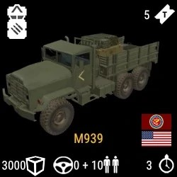

Command and Support
The command and support kits are the kits that have to be picked by the squadleader in order to effectively lead the squad. (with the sole expection of the medic role)
Squadleader kits
Leader of an infantry squad. Has the ability to deploy assets, rallies and has direct communication to other squadleaders
Lead crewman
This kit is used for the leading of a armor squad and is needed to enter and operate armored vehicles.
Medic
The medic is critical for the survivability of the squad and is especially equiped with more bandages and a first aid kit
Lead pilot
The leadpilot kit is necessary in order to operate helicopters so they can transport personnel and supplies
Vehicles
There are a lot of different vehicles in squad. Every single faction has unique vehicles which would make this list very long, but all vehicles can be classed into 4 categories
Transport
Most of these vehicles are used for transporting supplies and troops. They are very fragile and almost never have any weaponry to defend themselfs. Most common example of a transport vehicle is the LOGI (logistics vehicle)
APC
APC stands for Armored Personnel Carrier. This is a more protected way to transport personal. Most APC's have light weaponry and are decently armored. Best example of an APC is the russian BTR-82A
IFV
This stands for Infantry Fighting Vehicle. This is pretty heavily armored and wont be taken out but a rocket or 2. Vehicles in its class have a large arsenal of weaponry that can contain TOW missles, large 30>+mm canons capable of destroying any vehicle and 50-cal machine guns. My favorite example of an IFV is the British FV520 CTAS "Warrior"
MBT
Last but not least we have the Main Battle Tanks. These stand at the top of any match in terms of firepower. They have a big main 105mm canon with up to 5 differant type of round raging from SABOT (anti tank) to Fragmentation round againts infantry. You will need multiple well placed rockets to take one of these down. Most well known tank of all is the American M1A2 Abrams